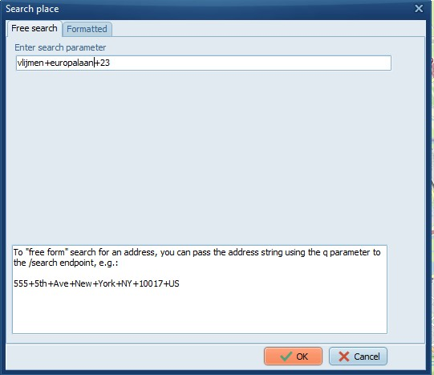
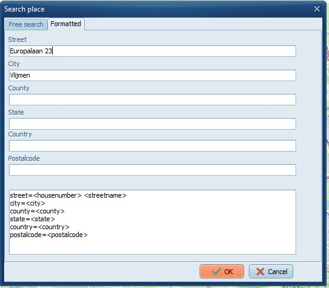
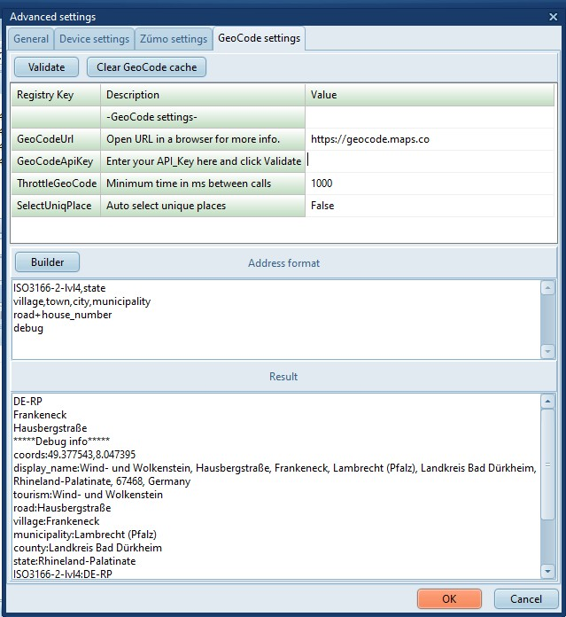

Be more specific and add the street and house_number.
On the Free search tab use a + plus (or , comma) to separate the search
parameters. Or use the Formatted tab.
|

Vlijmen+europalaan+23
|

Same, but formatted in separate fields.
|
Searching the place of coordinates
With GeoCoding enabled these functions will lookup the address of the
coordinates.
- Using Ctrl+Click in the map.
Using the lookup button in the TripEditor.
If valid coordinates are available then TripManager will search for
the address at those coordinates. If no coordinates are available it
will search for the address and return the coordinates. The
Address found is stored in the trip file in field ‘mAddress’.
- Post processing a GPX, for points that have Lookup Address checked.
The address found is stored in the <cmt> xml tag. Additionally for
Way points in the <address> tags.
Note:
Importing/Exporting in/from Basecamp will retain the data, but the
<cmt> is not visible in BaseCamp.
Address format examples
The setting ‘Address format’ controls how an address returned by
GeoCode should be formatted. Here the same location is shown in 3
different formats.
The default TripManager settting:ISO3166-2-lvl4,statevillage,town,city,municipality,hamletroad+house_number - A special tag named: display_name showing all data.
- A special tag named: coords showing only the GPS coordinates.
In Trip Editor:
On the XT:
|
The available tag names depend on
the data that is available in OSM for
a location. To view all tags available
for a specific location use the special
tag debug.
This will add a block with
*****Debug info *****
|

|